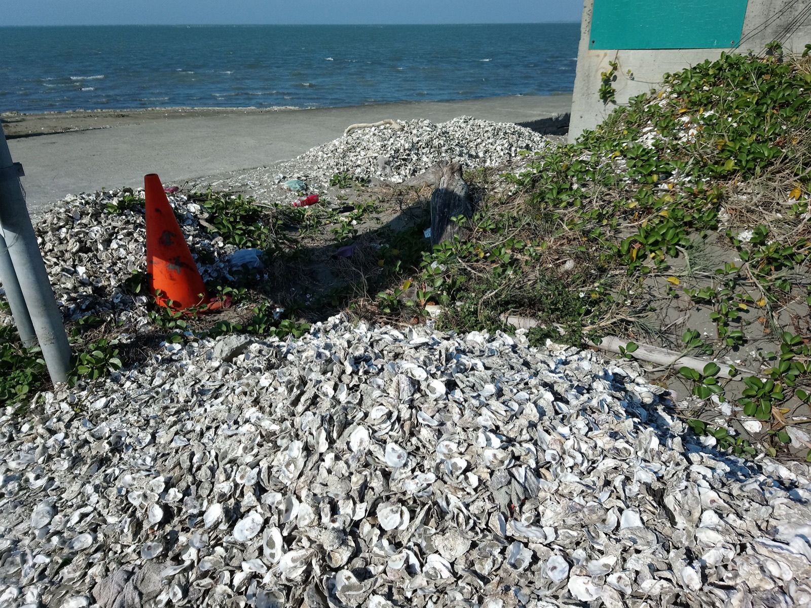

台南、嘉義、雲林是全台最大的蚵類養殖區。 每一碗蚵仔煎、每一份蚵嗲、每一碗蚵仔麵線——都從這裡來。
蚵農把竹竿、保麗龍浮具、繩子搭成蚵棚，立在海上。 蚵掛在繩子上，6 個月到 1 年慢慢長大。
但是颱風一來……
每年颱風一來——
- 蚵棚被打壞、被吹走
- 保麗龍碎成沙子大小的小白點
- 漂上漁光島月牙灣
- 混在沙子裡——永遠清不乾淨
每年大約有 6 萬顆保麗龍浮具，從西海岸的蚵棚流失到大海。 它們不會「分解」，只會碎得越來越小， 最後變成沙子上的小白點——這就是「白色污染」。

200 年都不會消失
保麗龍碎片要在沙裡待上200 年以上。 而且它不會「分解」——只會碎得更小。
最後跑進魚的肚子，跑進蚵的肚子——而蚵就是養來給人吃的。
所以——你今天吃的蚵仔煎裡的蚵， 體內可能就有從10 年前的颱風飄出來的保麗龍碎片。
20 年沒停過的監測
台南社區大學從 2005 年開始監測月牙灣，整整 20 年沒停。 每月一次去撿、紀錄、比對。
兩週後，我們會跟社大志工阿凱一起出任務。
你撿的數據，會加進他們 20 年的資料庫——
你不只是去玩沙，你會在做科學家在做的事。
Source · 台南社區大學環境組（beach.tncomu.tw）； 綠色和平 / 荒野保護協會 ICC 海岸快篩調查